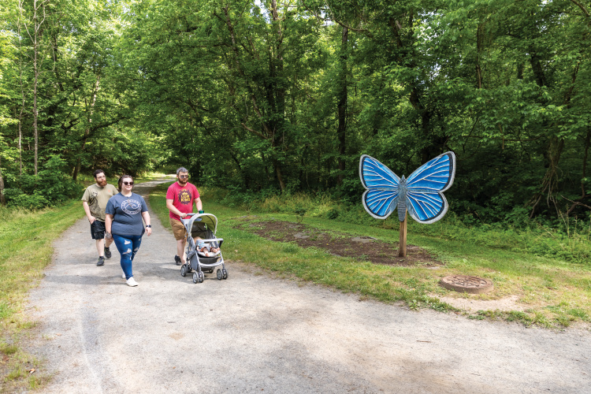
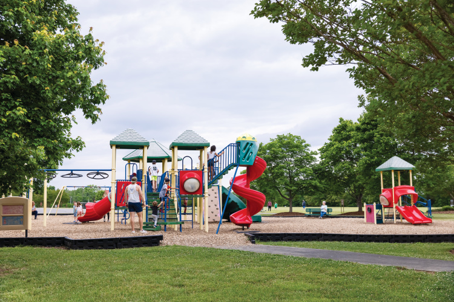

Find Local Resources
Browse essential community services—from food assistance to job training programs—all in one place.
Free WiFi Access
Locate nearby hotspots and public internet access points across Eden using our interactive map.
Learn Digital Skills
Access step-by-step guides and tutorials that help you confidently use technology every day.